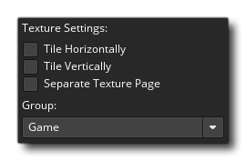

Lorsque vous créez un jeu avec GameMaker Studio 2, vous avez sûrement créé des graphiques - sprites, tilesets et polices - pour l'accompagner. Ces graphiques sont stockés sur des pages de texture que GameMaker Studio 2 crée pour vous à partir de toutes les ressources d'image que contient votre jeu. Voici un exemple de page de texture terminée: 
Comme vous pouvez le voir, les graphismes du jeu sont tous mélangés de telle manière qu'ils s'adaptent à une puissance de 2 pages, par exemple 512x512, 1024x512 etc... jusqu'à une taille maximale de 4096x4096 pixels. Notez que la taille maximale d'une page de texture dépend de la plate-forme d'exportation choisie, car certaines cibles n'autoriseront pas les pages supérieures à 2048x2048px. Il est également intéressant de noter que même si vous avez une ressource qui est plus grande que 4096px taille - ou la taille maximale pour la plate - forme choisie - ce sera réduite de moitié (et la moitié à nouveau si nécessaire) jusqu'à ce qu'il soit sur la taille maximale de page, il ne sera pas divisé en sections sur différentes pages de texture.
Il est également à noter que si vos sprites ont beaucoup d'espace vide (ie: pixels transparents) autour d'eux, ils seront recadrés par défaut pour supprimer ces pixels "invisibles" et emballer autant d'images que possible sur une seule texture. page. Si ce n'est pas ce que vous souhaitez, alors vous devez le désactiver dans la fenêtre Groupes de textures.
Paramètres de texture
L' éditeur de ressources de sprite comporte une section intitulée Paramètres de texture, illustrée ci-dessous: 
Vous pouvez définir ici comment l'image doit être stockée sur la page de texture, s'il s'agit d'une image spécifique à un objet 3D ou doit être stockée séparément et quelle page de texture (le cas échéant) doit être affectée à. Les deux premières options, Mosaïque horizontale et Mosaïque verticale, concernent la manière dont les bords de l'image seront créés lorsqu'ils seront placés sur la page de texture. Une image qui doit être carrelée aura les bords (horizontaux ou verticaux) ajoutés par les bords du côté opposé, tandis que si aucune mosaïque n'est sélectionnée, le sprite sera serré et les bords des pixels seront répétés (notez que les tilesets ont aussi un paramètre pour la largeur de la bordure de sortie, qui se trouve dans les propriétés de l'ensemble de carreaux et qui fait la même chose, seulement pour chaque carreau de l'ensemble). L'image suivante illustre ceci: 
Sous ces paramètres se trouve le paramètre Page de texture séparée. Cette option forcera GameMaker Studio 2 à placer cette image sur sa propre page de texture unique et aucune option n'est associée à cela, car le pavage ou le serrage est contrôlé directement par le code. Ceci est le plus souvent utilisé pour texturer des modèles 3D (auquel cas la texture devrait avoir une puissance de 2, par exemple: 128x128 ou 512x512), mais vous pouvez l'utiliser pour forcer n'importe quelle image à dessiner sur sa propre page unique.
Maintenant, quand votre jeu est grand avec beaucoup de ressources artistiques, il se peut que la façon dont GameMaker Studio 2 crée automatiquement ces pages ne soit pas optimale pour tirer le meilleur parti de l'appareil cible, du fait que si une pièce dans votre jeu a besoin de ressources à partir de 4 pages de texture différentes, le périphérique devra échanger ces pages dans (et en dehors de) la mémoire en permanence, ce qui peut entraîner une perte de performance. A cette fin, vous avez la possibilité d'indiquer à GameMaker Studio 2 quelles images doivent être placées sur une page de texture spécifique, le but final étant de minimiser le nombre de swaps effectués dans un jeu à la fois (les pages de texture peuvent être ajoutées). dans la fenêtre Groupes de texture ). Il est également intéressant de noter que dans les onglets de plate-forme individuels qui se trouvent dans les Options de jeu, il y a un bouton qui vous permet de voir les pages de texture que vous avez définies, comme elles le seraient pour chaque cible.
Si vous avez une texture dans votre jeu supérieure à la taille de la texture, cette image sera automatiquement réduite par GameMaker Studio 2 pour l'adapter à la page de texture. Cela signifie que lorsque vous testez votre jeu sous Windows, Ubuntu (Linux) ou MacOS, le jeu peut sembler bien, car vous utilisez des pages de texture plus grandes, mais sur iOS (ou toute autre cible nécessitant une taille de page plus petite pour des performances optimales la texture peut paraître floue ou avoir des artefacts. Il est essentiel que vous vous assuriez que vos images sont toutes en mesure de tenir sur la plus petite des tailles de page de texture que votre jeu utilisera, et sinon, vous devriez les diviser en plus petites images puis les dessiner ensemble dans votre jeu pour donner le illusion d'une grande, complète, image.